Machine Intelligence
To measure the world in vectors, and let numbers speak what words cannot.
I'm Yangbin Chen, an Assistant Professor in the Department of Computing at Xi'an Jiaotong-Liverpool University. I obtained my Ph.D. in Computer Science from City University of Hong Kong and my B.Eng. in Automation from University of Science and Technology of China. Prior to joining XJTLU, I worked in a medical technology startup as Machine Learning VP.
My research is situated at the intersection of large foundation models, multi-agent systems, and AI for healthcare, with a coherent progression from theoretical investigation to technical innovation and translational application. At the theoretical level, my work explores how foundation models acquire, represent, and reason over complex human language, affective states, social contexts, and domain-specific knowledge. At the methodological level, I develop agentic frameworks that enhance model autonomy, collaboration, reflection, and adaptive decision-making. At the application level, my research advances human-centered healthcare intelligence, aiming to support empathetic interaction, mental health assessment, clinical decision support, and long-term digital care. Collectively, my work contributes to trustworthy, adaptive, and socially beneficial AI systems.
I am currently looking for self-motivated postgraduate research students with strong academic backgrounds in computer science or mathematics who might be interested in the above research directions. Please feel free to drop an email if you have interest.
To measure the world in vectors, and let numbers speak what words cannot.
Every tool is a double-edged gift — swift in hand, weighty in conscience.
May the light of technology fall where kindness is needed most.
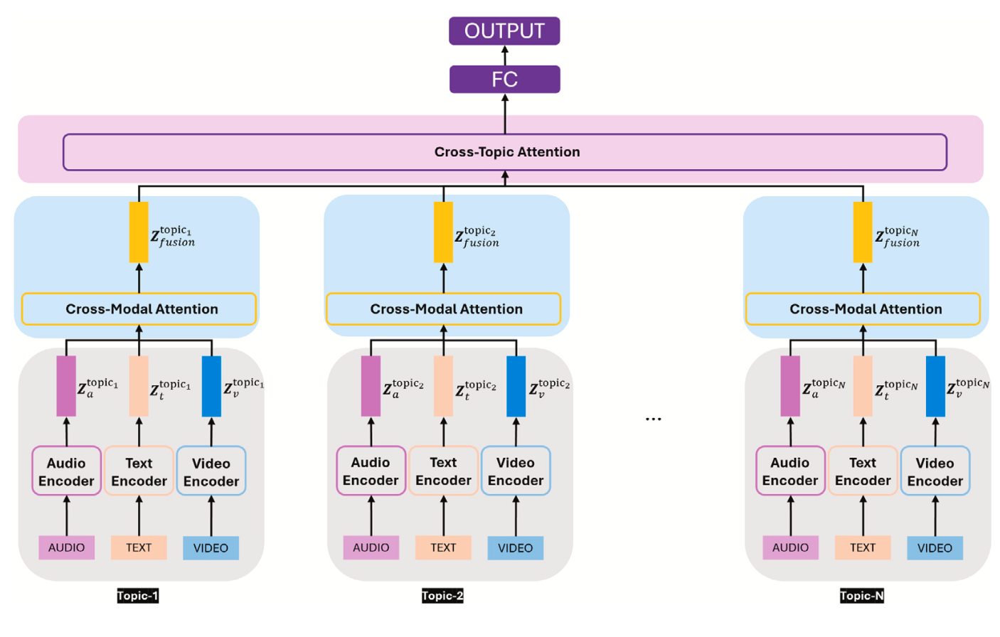
Depression Detection via Multimodal Analysis Using a Large Language Model-Powered Interview Platform
Engineering Applications of Artificial Intelligence, 173, 2026
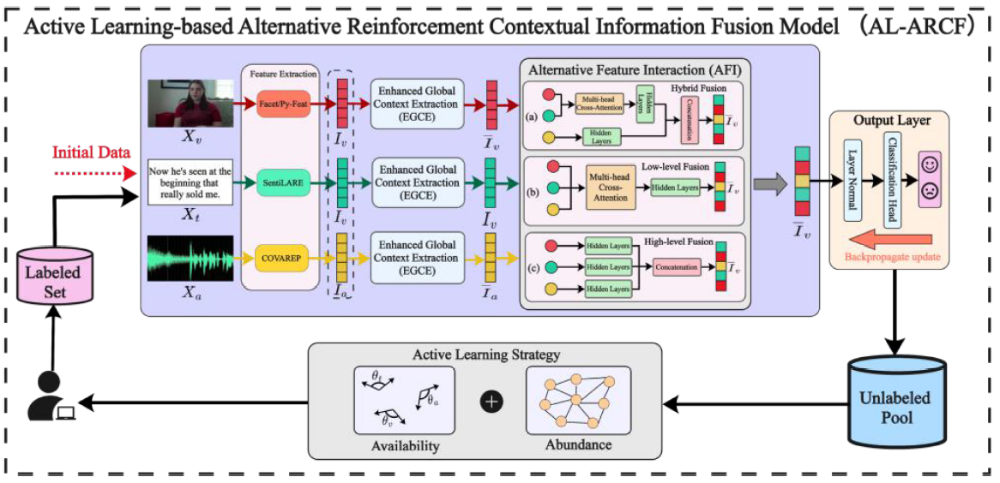
An Active Learning-based Alternative Reinforcement Contextual Information Fusion Model for Multimodal Sentiment Analysis
IEEE Transactions on Audio, Speech and Language Processing (TASLP), 2025
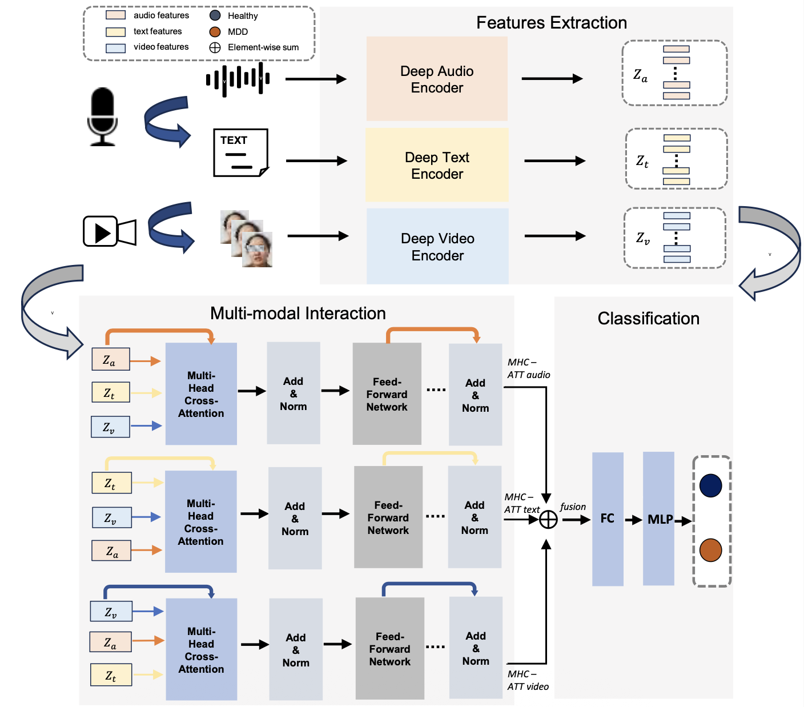
Deep Learning-based Detection of Depression by Fusing Auditory, Visual and Textual Clues
Journal of Affective Disorders, 2025
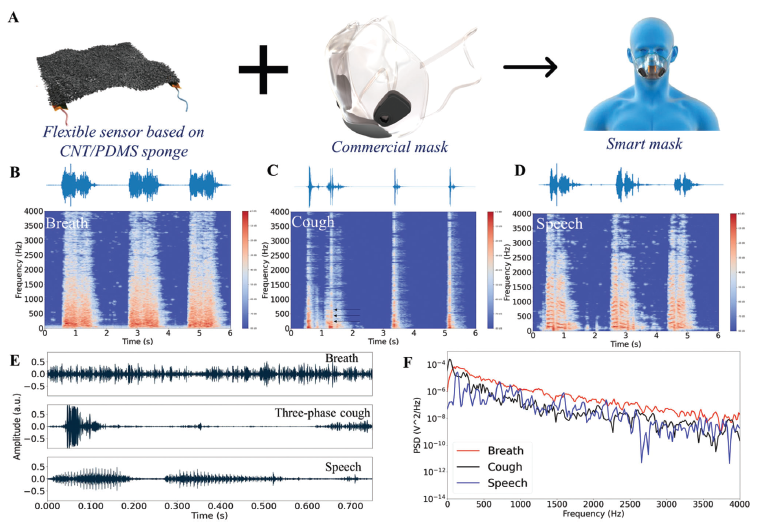
Wide-Bandwidth Nanocomposite-Sensor Integrated Smart Mask for Tracking Multiphase Respiratory Activities
Advanced Science, 2022
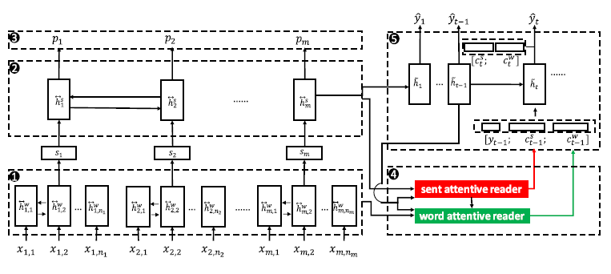
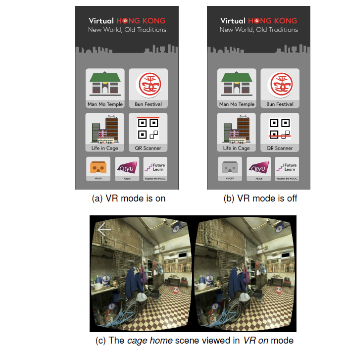
Design and Evaluate Immersive Learning Experience for Massive Open Online Courses (MOOCs)
IEEE Transactions on Learning Technologies, 2018
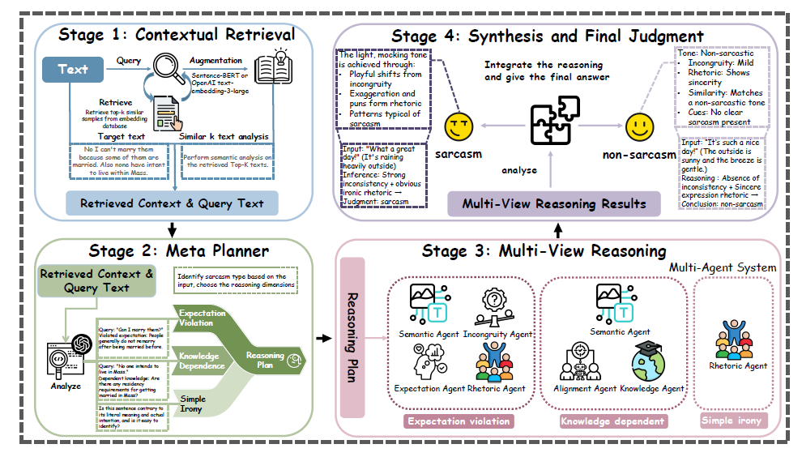
RAM-SD: Retrieval-Augmented Multi-agent framework for Sarcasm Detection
Proceedings of the 64th Annual Meeting of the Association for Computational Linguistics (ACL), 2026
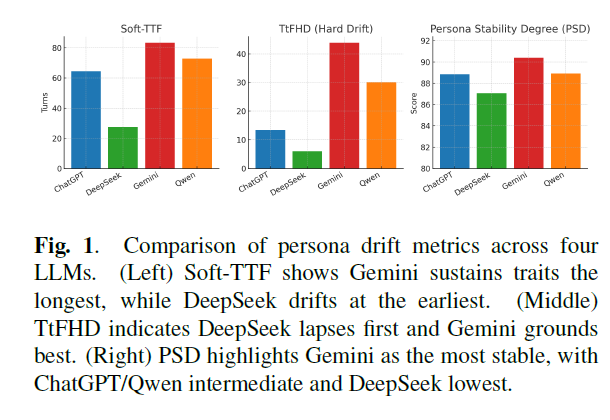
Persona Drift Detection in Role-Playing Agents: A Multi-Dimensional Consistency Framework
IEEE International Conference on Acoustics, Speech and Signal Processing (ICASSP), 2026
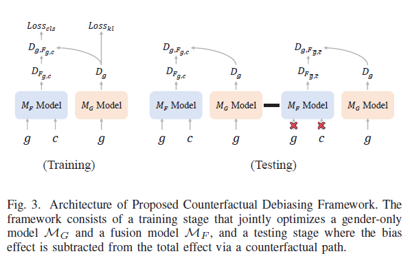
Mitigating Gender Bias in Depression Detection via Counterfactual Inference
29th International Conference on Computer Supported Cooperative Work in Design (CSCWD), 2026
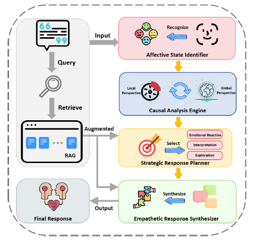
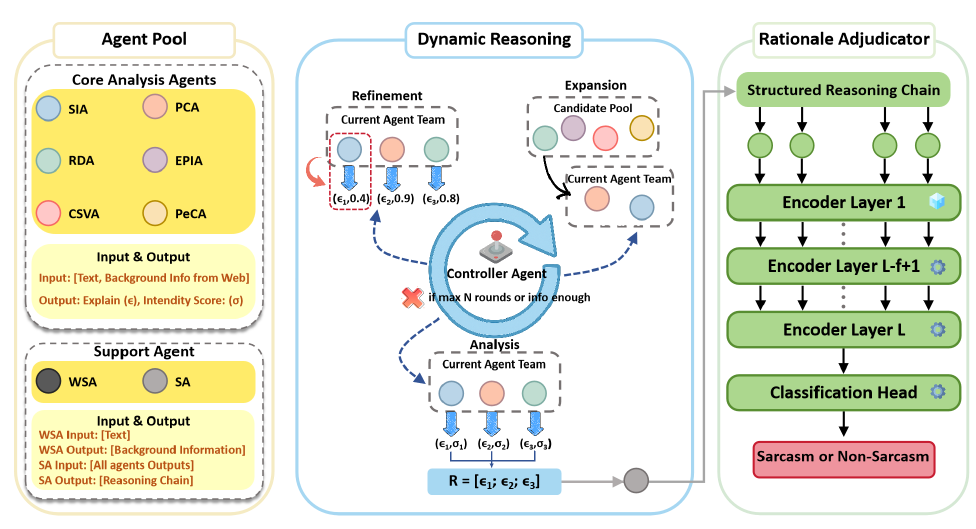
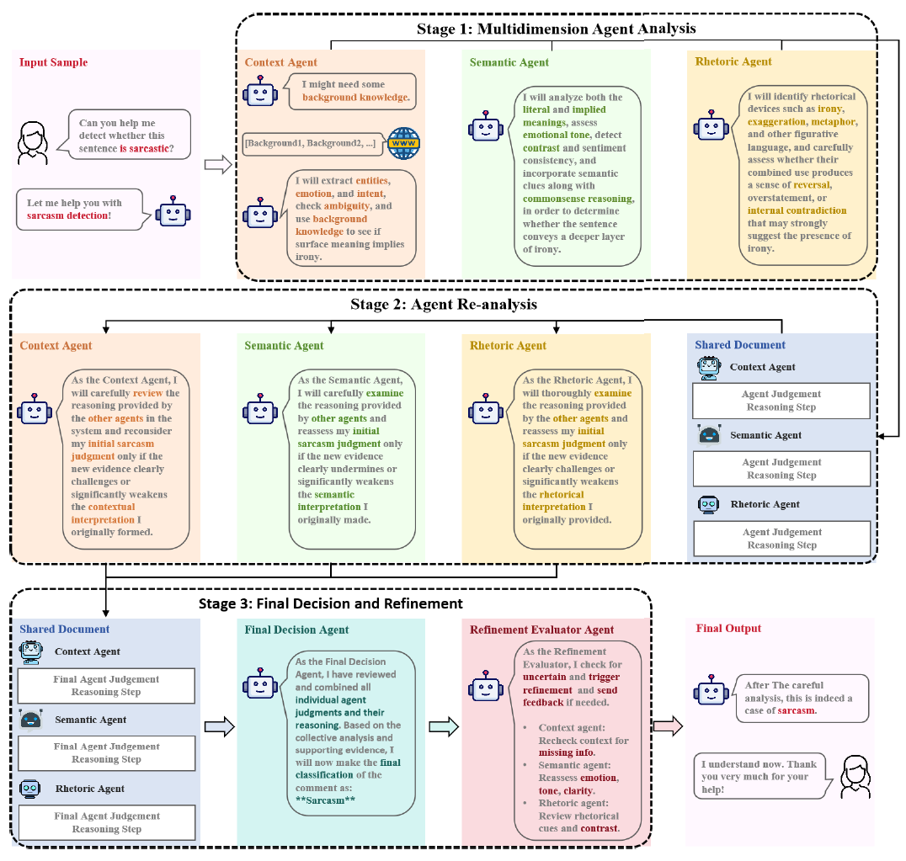
CAF-I: A Collaborative Multi-Agent Framework for Enhanced Irony Detection with Large Language Models
32nd International Conference on Neural Information Processing (ICONIP), 2025
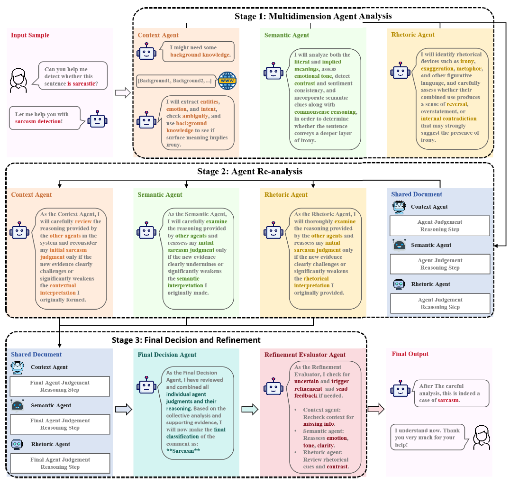
An Active Learning-based Global-Distribution Attention Model for Multimodal Sentiment Analysis
13th International Conference on Affective Computing and Intelligent Interaction (ACII), 2025
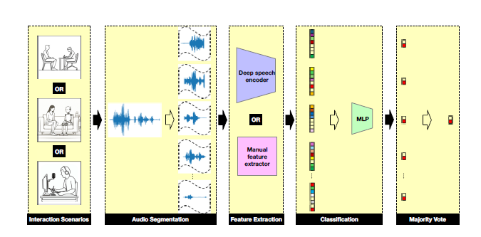
Speech-based Clinical Depression Screening: An Empirical Study
Proceedings of International Conference on Acoustics, Speech and Signal Processing Workshops (ICASSPW), 2025
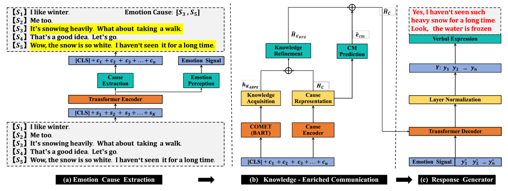
Wish I Can Feel What You Feel: A Neural Approach for Empathetic Response Generation
Findings of EMNLP, 2022
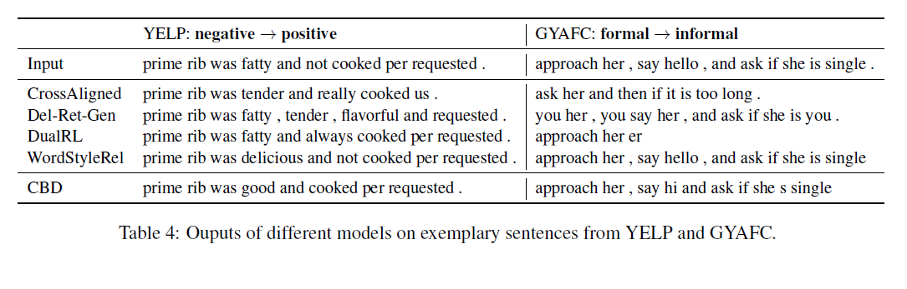
Collaborative Learning of Bidirectional Decoders for Unsupervised Text Style Transfer
Proceedings of EMNLP, 2021
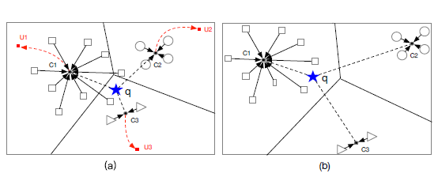
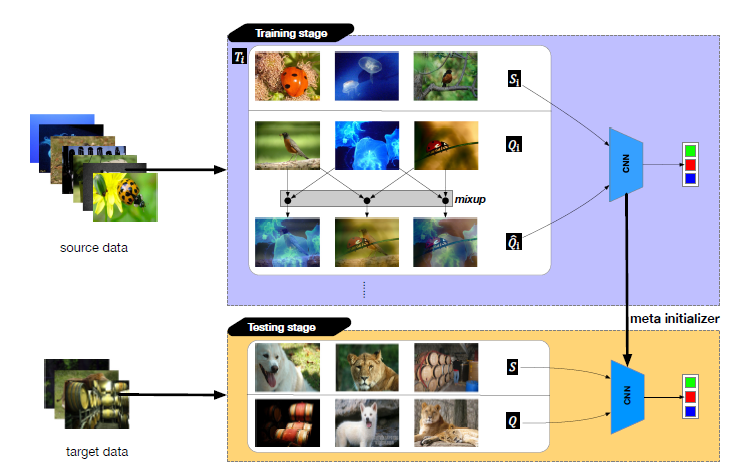
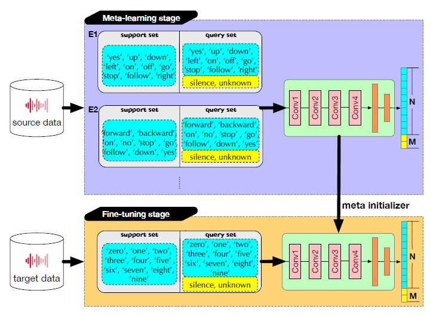
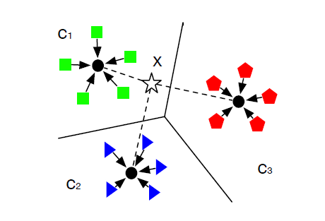
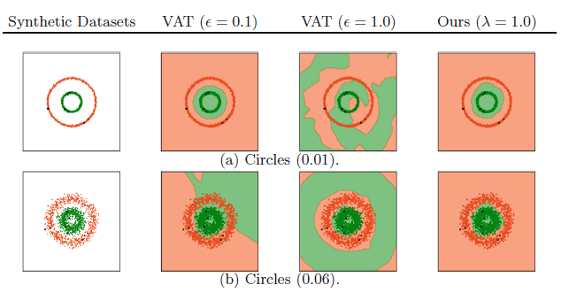
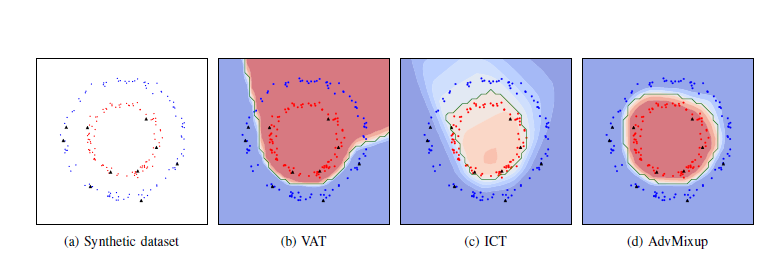
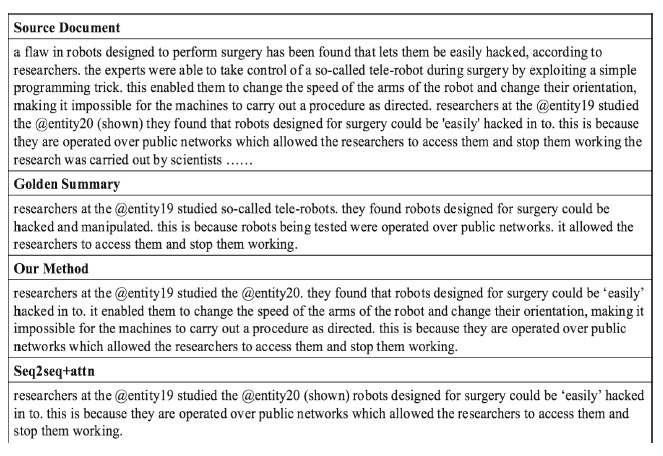
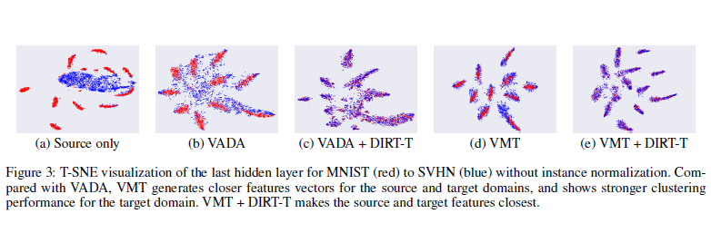
PhD in Computer Science
City University of Hong Kong
MPhil in Computer Science
City University of Hong Kong
B.Eng. in Automation / B.A. in Communication
University of Science and Technology of China
Assistant Professor
Xi'an Jiaotong-Liverpool University
Teaching, Research, & Service.
Machine Learning VP
Fubian Medical Technology Co., Ltd.
Artificial Intelligence for mental healthcare.
Postdoctoral Fellow
The Chinese University of Hong Kong
Few-shot learning.
Research Intern
Huawei Noah's Ark Lab
Meta-learning in speech and language processing.
Research Assistant
City University of Hong Kong
Deep learning for automatic text summarization.
PC Member / Reviewer
Conference: NeurIPS, AAAI, ACL, EMNLP, CoNLL, Interspeech, ICASSP, ICPR
Journal: Neurocomputing, IEEE TASLP, Applied Soft Computing, ACM TOMM, Artificial Intelligence in Medicine
我想塗去一切不幸 / I want to wipe away all the unfortunate
我想在大地上畫滿窗子 / Paint windows all over the earth
讓所有習慣黑暗的眼睛 / Let all eyes that are accustomed to the dark
都習慣光明 / All light
Email: Yangbin.Chen [at] xjtlu.edu.cn
Phone: +86 (0)512 85186499
Affiliation: Department of Computing, Xi'an Jiaotong-Liverpool University, Suzhou, China
I'm always open to collaborations from both academic and industrial sectors.